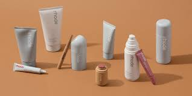
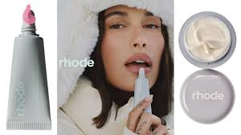

Rhode is a beauty brand that was launched in 2022 and Rhode focuses on minimalism. They're main concern is focusing on your skin barrier and building your skins health from there. They started a trend called "Glazed Donut Skin" which means to have glowy skin but making sure its not greasy. Their products sell out very quickly. They are also known to sell a lot of limited edition items to make people feel like they have to buy it or they will miss out. The founder of this brand is Hailey Bieber. She is married to Justin Bieber and she got the name "Rhode" from herself and her family. Her middle name is Rhode but it is also a family name.
Rhodes first products released were very minimal because Hailey did not like when skincare routines were overhwhelming and took too long. Especially when you did not see results. She has released skincare prodcuts like they barrier butter, the glazing milk, the glazing milk mist, the barrier restore cream, the pineapple refresh daily cleanser,etc. She also released makeup products like her lip tints, pocket blushes, and lip liners. She also sells lip treatments in scents, watermelon, strawberry, salted caramel, vanilla, and an unscented. She has released many more products and they have all sold out almost instantly. People online have also been loving her phone cases and snap on cases that hold her lip balms.
Rhodes strategy for their products is to use food inspired names and advertisements. Some examples are jelly bean, strawberry glaze, watermelon slice, salted caramel, and cinnamon roll. There are many more examples. They do this so you feel comfortable with their prodcuts. Hailey Bieber also uses her own products and her skin is beautiful which, of course, makes everyone want to buy Rhode prodcucts. She also started a trend called the " Clean girl aesthetic" which is very minimalistic but very "chic." In just a few years Hailey turned her business into a billion dollar business.©

